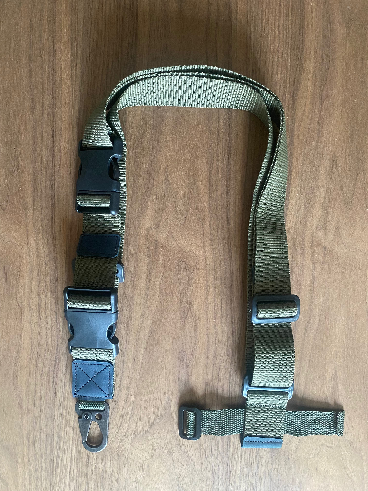
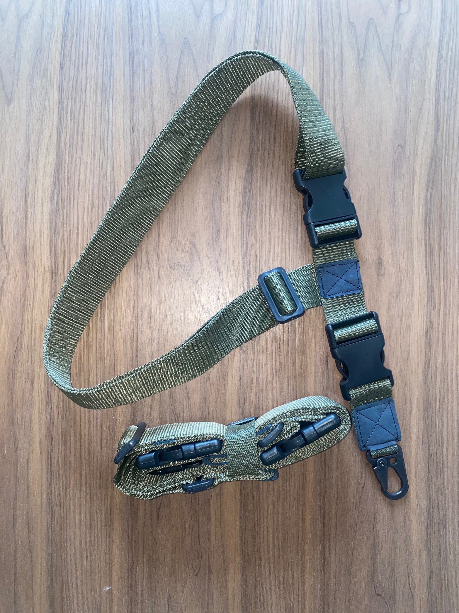
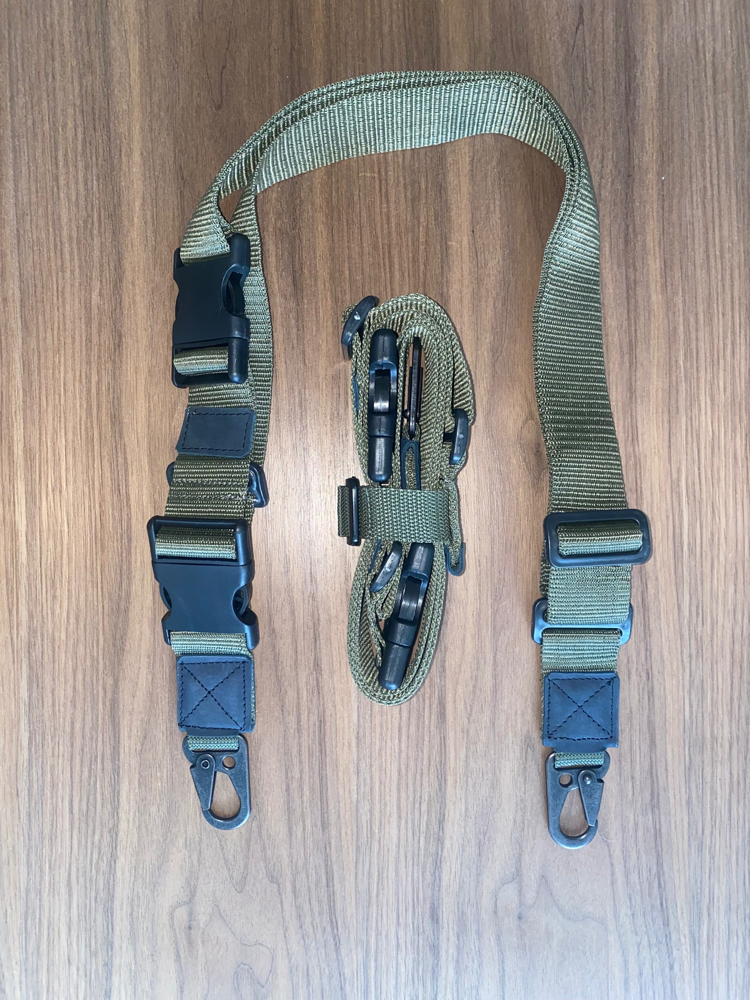
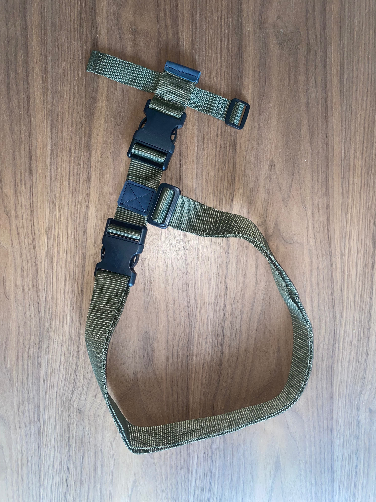
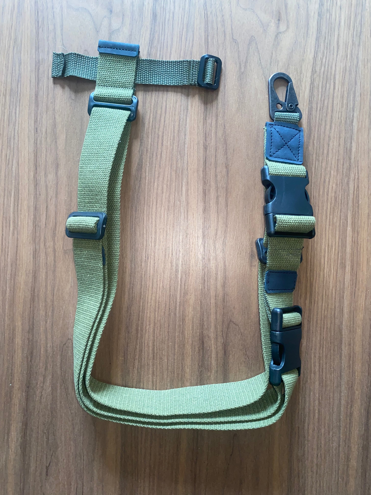

Русский военный корабль пошел на х#й!
Про нас
Основна мета нашої компанії – це надати клієнтам надійне і якісне військове спорядження, яке відмінно покаже себе в суворих і екстремальних умовах. У нас є товари для воєнізованих структур, екіпіровка для рибалок і мисливців, спеціальних підрозділів, туристів і просто любителів активного способу життя — гравців у страйкбол і пейнтбол, які цінують гарне спорядження, вибираючи для себе найкраще. Тактичне військове спорядження Розвантажувальний пояс є важливою частиною спорядження. Створений, згідно з військовим специфікаціям, з міцного матеріалу, він не підведе в суворих умовах експлуатації. Тактичний пояс дуже якісний і добротний, пошитий рівно, без стирчать ниток, зручний у використанні, швидко підганяють по довжині. Ми уважно стежимо за якістю, щоб запропонувати клієнтам тільки найкраще. Розвантажувальний жилет, створений з високоміцного нейлону, стане відмінним доповненням військового спорядження. Легкий, компактний, надійний, з продуманою системою захисту, це відмінний вибір для професійних військових, мисливців, рибалок, гравців у страйкбол та інші військові ігри — для всіх цінителів хороших і добротних речей, якісної екіпіровки.
Товари
-

Ремінь одноточковий універсальний, з утяжкою
Ремінь одноточковий універсальний, з утяжкою (на випадок, коли немає антабки, або відсутня можливість кріплення ременя карабіном зі сторони прикладу). Вироблений з поліамідної стропи, посиленої. Переваги такого матеріалу – бистре висихання та підвищена стійкість до зносу, особливо в польових умовах. Всі стики армовані якісною натуральною шкірою, товщиною 3 мм., проклеєні та прошиті армованою ниткою. У виробі використовуються якісна фурнітура. Ремінь в зборі, матеріали та фурнітуру протестовано, витримує статичні та динамічні навантаження (до 22 кг.) в польових умовах.
-

Ремінь трьохточковий універсальний
Ремінь трьохточковий універсальний. Вироблений з поліамідної стропи, посиленої. Переваги такого матеріалу – бистре висихання та підвищена стійкість до зносу, особливо в польових умовах. Всі стики армовані якісною натуральною шкірою, товщиною 3 мм., проклеєні та прошиті армованою ниткою. У виробі використовуються якісна фурнітура, посилені металеві тактичні карабіни. Ремінь в зборі, матеріали та фурнітуру протестовано, витримує статичні та дінамічні навантаження (до 22 кг.) в польових умовах.
-

Ремінь одноточковий універсальний
Ремінь одноточковий універсальний. Вироблений з поліамідної стропи, посиленої. Переваги такого матеріалу – бистре висихання та підвищена стійкість до зносу, особливо в польових умовах. Всі стики армовані якісною натуральною шкірою, товщиною 3 мм., проклеєні та прошиті армованою ниткою. У виробі використовуються якісна фурнітура, посилені металеві тактичні карабіни. Ремінь в зборі, матеріали та фурнітуру протестовано, витримує статичні та динамічні навантаження (до 22 кг.) в польових умовах.
-

Ремінь трьохточковий універсальний
Ремінь трьохточковий універсальний. Вироблений з поліамідної стропи, посиленої. Переваги такого матеріалу – бистре висихання та підвищена стійкість до зносу, особливо в польових умовах. Всі стики армовані якісною натуральною шкірою, товщиною 3 мм., проклеєні та прошиті армованою ниткою. У виробі використовуються якісна фурнітура, посилені металеві тактичні карабіни. Ремінь в зборі, матеріали та фурнітуру протестовано, витримує статичні та динамічні навантаження (до 22 кг.) в польових умовах.
-

Ремінь одноточковий універсальний, з утяжкою
Ремінь одноточковий універсальний, з утяжкою (на випадок, коли немає антабки, або відсутня можливість кріплення ременя карабіном зі сторони прикладу). Вироблений з х.б. (брезентової) стропи, посиленої синтетичним армуванням зсередини. Переваги такого матеріалу – бистре висихання та підвищена стійкість до зносу, особливо в польових умовах (довге висихання цільно-брезентової стропи – відома проблема). Всі стики армовані якісною натуральною шкірою, товщиною 3 мм., проклеєні та прошиті армованою ниткою. У виробі використовуються якісна фурнітура. Ремінь в зборі, матеріали та фурнітуру протестовано, витримує статичні та динамічні навантаження (до 22 кг.) в польових умовах.
-

Ремінь трьохточковий універсальний, з утяжкою
Ремінь трьохточковий універсальний, з утяжкою (на випадок, коли немає антабки, або відсутня можливість кріплення ременя карабіном зі сторони прикладу). Вироблений з х.б. (брезентової) стропи, посиленої синтетичним армуванням зсередини. Переваги такого матеріалу – бистре висихання та підвищена стійкість до зносу, особливо в польових умовах (довге висихання цільно-брезентової стропи – відома проблема). Всі стики армовані якісною натуральною шкірою, товщиною 3 мм., проклеєні та прошиті армованою ниткою. У виробі використовуються якісна фурнітура, посилені металеві тактичні карабіни. Ремінь в сборі, матеріали та фурнітуру протестовано, витримує статичні та динамічні навантаження (до 22 кг.) в польових умовах.